3 General strategy
library(tidyverse)
library(dcldata)3.1 The goals of visualization
3.1.1 Two types of plots
buildings contains data on some of the tallest buildings in the world. buildings_10 includes just the 10 tallest.
buildings_10 <-
buildings %>%
slice_max(height, n = 10)You might be curious to know which buildings are the tallest and how tall they are.
buildings_10
#> # A tibble: 10 x 6
#> building city country height floors year
#> <chr> <chr> <chr> <dbl> <dbl> <dbl>
#> 1 Burj Khalifa Dubai United Arab Emirat… 2717 163 2010
#> 2 Shanghai Tower Shanghai China 2073 128 2015
#> 3 Abraj Al-Bait Clock Tower Mecca Saudi Arabia 1971 120 2012
#> 4 Ping An Finance Center Shenzhen China 1965 115 2017
#> 5 Lotte World Tower Seoul South Korea 1819 123 2016
#> 6 One World Trade Center New York Ci… United States 1776 94 2014
#> # … with 4 more rowsIt’s difficult to extract meaningful insights from tables. A visualization will be more helpful.
buildings_10 %>%
mutate(building = fct_reorder(building, height)) %>%
ggplot(mapping = aes(x = height, y = building)) +
geom_point()
You can now see that Burj Khalifa is the tallest by several hundred feet. No other buildings come close.
Visualizations are a great way to explore data, and you’ll often use visualizations as a way to learn about a data set. We’ll call these visualizations exploratory data analysis (EDA) plots.
Exploratory data analysis is the process of investigating your data. In EDA, you ask questions about your data, try to answer those questions, and then use what you find to reformulate your existing questions or ask new ones. Visualization is just one tool for EDA.
After doing some EDA, you might want to share what you learn with someone else. Plots made during EDA are generally made very quickly. They may need some fine-tuning before they can be useful to other people. We’ll call plots you make to share information with others presentation plots.
Polishing touches like labels, titles, legend position, etc. matter more for presentation than EDA because your audience may have no prior experience with your data.
buildings_10 %>%
mutate(building = fct_reorder(building, height)) %>%
ggplot(mapping = aes(x = height, y = building)) +
geom_point() +
labs(
x = "Height (feet)",
y = "Building name",
title = "Heights of the world's 10 tallest buildings"
)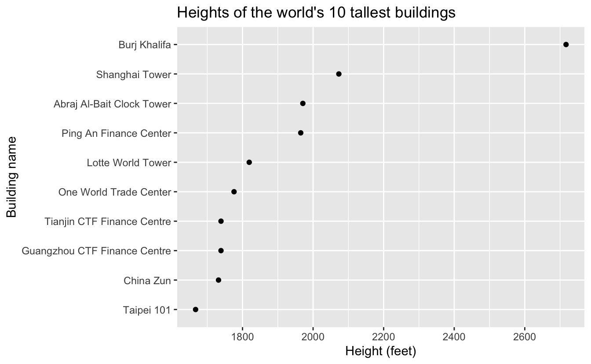
The purpose of an EDA plot is different from the purpose of a presentation plot. You construct EDA plots for yourself to help you answer questions. Before you run your ggplot2 code, you won’t know what the plot will tell you. EDA plots are also meant to be quick, and you don’t need to worry about perfecting details. You create presentation plots for others. The purpose of a presentation plot is to transfer an idea about the data from your own mind to the minds of others as effectively as possible. Where EDA plots are quick, presentation plots are slow. Clear and focused visualizations take time and lots of iteration.
3.1.2 Encoding and decoding
Data is not visual by default. Our buildings_10 data is just a collection of associated values.
buildings_10
#> # A tibble: 10 x 6
#> building city country height_ft floors year
#> <chr> <chr> <chr> <dbl> <int> <chr>
#> 1 Burj Khalifa Dubai United Arab Emi… 2717 163 2010
#> 2 Shanghai Tower Shanghai China 2073 128 2015
#> 3 Abraj Al-Bait Clock … Mecca Saudi Arabia 1971 120 2012
#> 4 Ping An Finance Cent… Shenzhen China 1965 115 2017
#> 5 Lotte World Tower Seoul South Korea 1819 123 2016
#> 6 One World Trade Cent… New York C… United States 1776 104 2014
#> # … with 4 more rowsWhen you visualize data, you encode these values into visual elements. In the ggplot2 basics chapter, you learned about the grammar of graphics. The grammar of graphics describes a way to build up plots by specifying aesthetic mappings, geoms, coordinate systems, and other plot elements. These plot elements control how your data is encoded into visual elements.
For example, consider our buildings_10 visualization. We chose to visualize two variables: building and height. There are many ways to visually encode these variables. We could have drawn pictures of each building and added a label to each picture indicating the height. We could have used geom_col() to encode height with bar length. Instead, we chose to use geom_point(), encoding height by the position of a dot along the x-axis and building by position along the y-axis.
buildings_10 %>%
mutate(building = fct_reorder(building, height)) %>%
ggplot(mapping = aes(x = height, y = building)) +
geom_point()
The result of encoding information into visual elements is a visual display. To extract insights about the data from this display, you have to decode the visual elements. Say you want to understand which building is the tallest. To decode the above visualization, you have to perceive the pattern of the dots and notice that one is the furthest to the right. Then, you have to connect that far right dot to its label and read the label in order to understand that Burj Khalifa is the tallest building.
The conception of visualization as a process of encoding and decoding comes from William S. Cleveland (Cleveland and McGill 1985). Cleveland emphasized that a plot is only successful if the decoding process goes well. You can create a visually stunning plot, but if no one can decode the visual elements back into the realm of the data, the visualization has failed.
Whether you are creating an EDA or presentation plot, you have to choose your encodings carefully. In EDA, different encodings provide different viewpoints into your data. Some choices of encodings will show you nothing. Others will lead to profound discoveries.
For example, recall our 100-meter dash plots from the previous chapter. When we use geom_bar(), we encode time with length.
example_sprint %>%
mutate(name = fct_reorder(name, -time)) %>%
ggplot(mapping = aes(x = time, y = name)) +
geom_col()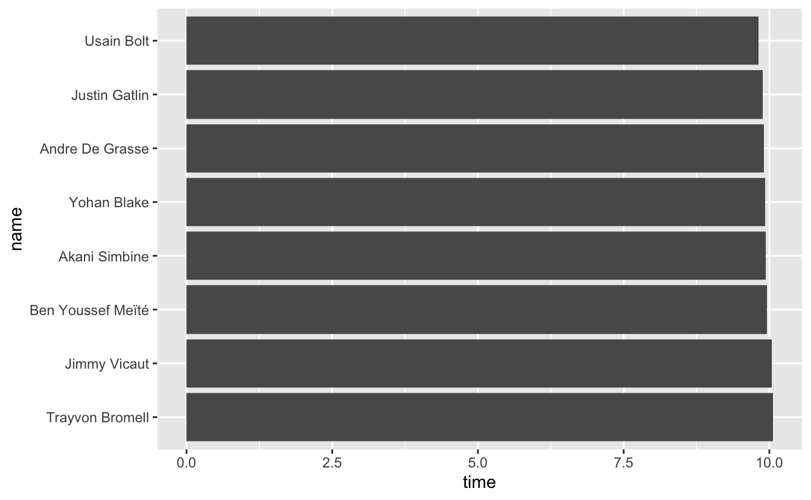
This plot communicates that Usain Bolt won, but it was pretty close. When we encode time with position using geom_point(), we get a different picture.
example_sprint %>%
mutate(name = fct_reorder(name, -time)) %>%
ggplot(mapping = aes(x = time, y = name)) +
geom_point()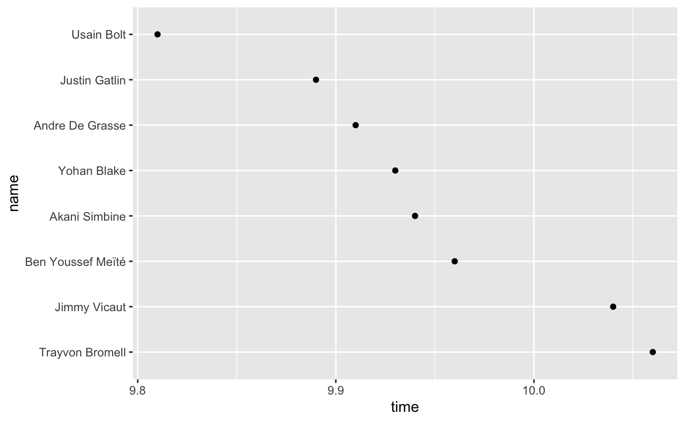
A choice of encodings could affect how you explore and understand the example_sprint data.
In a presentation plot, encoding information in visual elements is a way to transfer ideas about the data from your mind to the minds of others. You should choose your encodings so that the decoding process is easy for your audience. Ideally, as little information as possible should be lost in the decoding process. Your audience should come away with the same understanding of the data as you started with.
You’ve already seen plenty of examples of presentation plots in which decoding fails. For example, here’s a bar plot version of buildings_10 plot where the buildings are in alphabetical order.
buildings_10 %>%
ggplot(mapping = aes(x = height, y = building)) +
geom_col() +
stamp("Bad")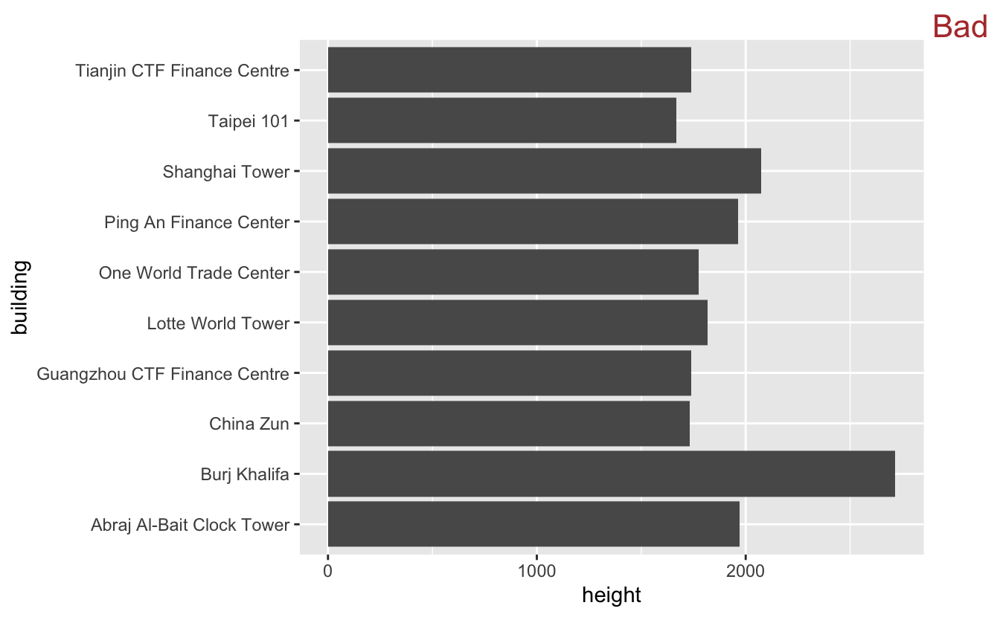
Say the idea you wished to transfer from your mind to the minds of others is the ranking of the buildings (i.e., the tallest is Burj Khalifa, then Shanghai Tower, etc.). The decoding process doesn’t totally fail, but it goes poorly. As we said earlier, it’s hard to compare unordered amounts. Using bars instead of dots also makes comparisons between the buildings more difficult.
The human visual system is responsible for the decoding process. If an encoding doesn’t work well with the visual system, decoding will fail. Next, we’ll discuss which encodings the human visual system can decode accurately, and which cause it trouble.
3.2 Perception
3.2.1 Encodings
When you encode a continuous variable (like building height), it’s important to be able to both estimate magnitudes and judge differences. We’ve already discussed a couple of encodings that make it easy for humans to do both these tasks: length and position.
Here, geom_point() encodes building height with position.
buildings_10 %>%
mutate(building = fct_reorder(building, height)) %>%
ggplot(mapping = aes(x = height, y = building)) +
geom_point()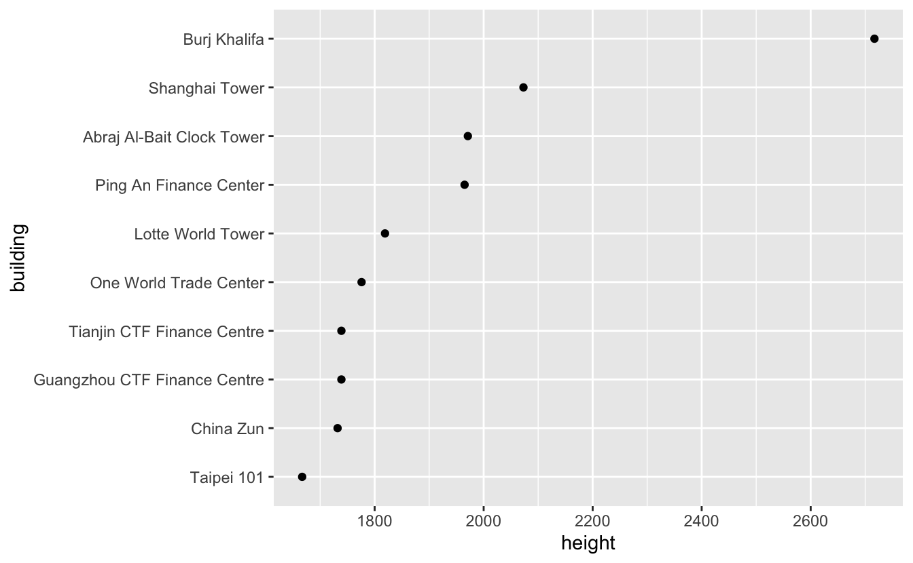
And geom_col() encodes height with length.
buildings_10 %>%
mutate(building = fct_reorder(building, height)) %>%
ggplot(mapping = aes(x = height, y = building)) +
geom_col()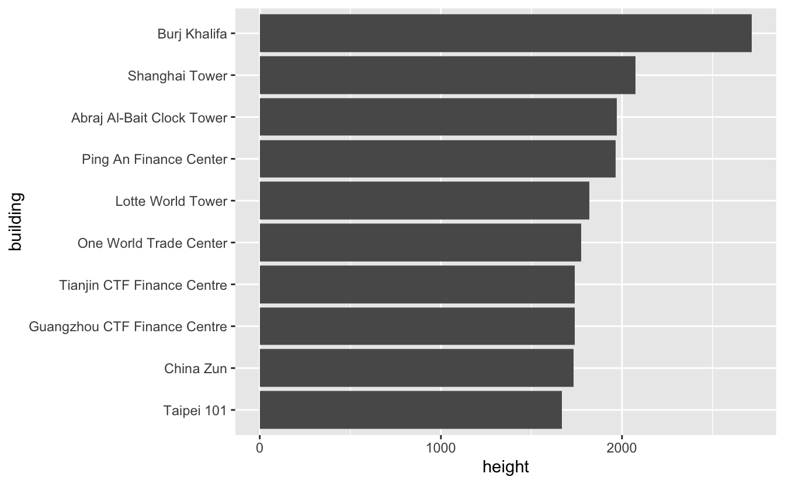
Notice how much harder the task becomes if we encode height with color.
buildings_10 %>%
mutate(building = fct_reorder(building, height)) %>%
ggplot(mapping = aes(x = 1, y = building, color = height)) +
geom_point(size = 10) +
theme(
axis.text.x = element_blank(),
axis.ticks.x = element_blank()
) +
labs(x = NULL) +
stamp("Bad")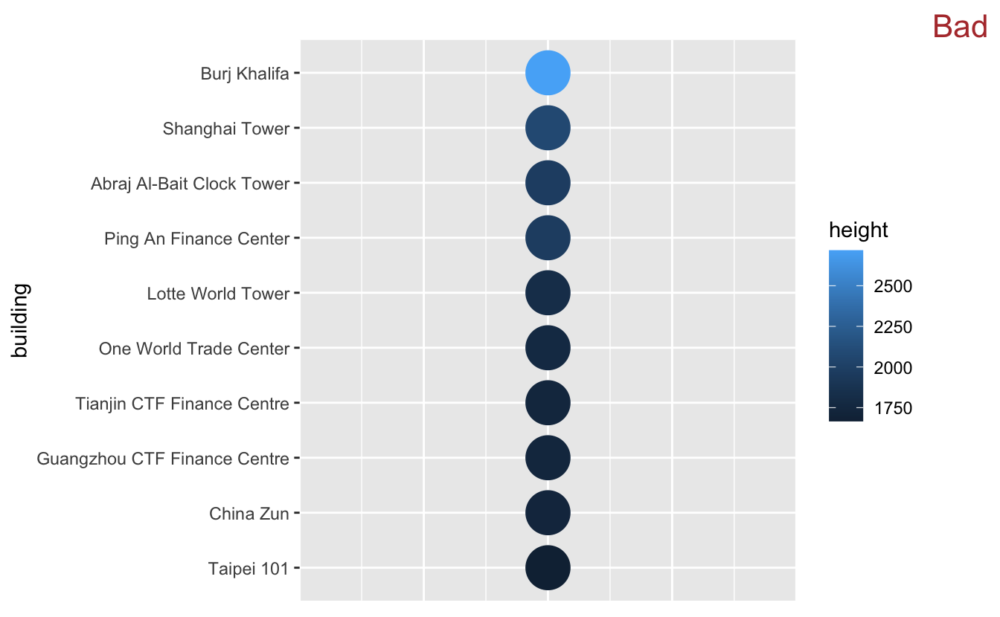
You can still tell that Burj Khalifa is the tallest, but its exact height is difficult to estimate. Encoding with color also makes it much harder to compare buildings. Lotte World Tower and One World Trade Center appear almost identical.
Encoding height with size causes similar problems.
buildings_10 %>%
mutate(building = fct_reorder(building, height)) %>%
ggplot(mapping = aes(x = 1, y = building, size = height)) +
geom_point() +
theme(
axis.text.x = element_blank(),
axis.ticks.x = element_blank()
) +
labs(x = NULL) +
stamp("Bad")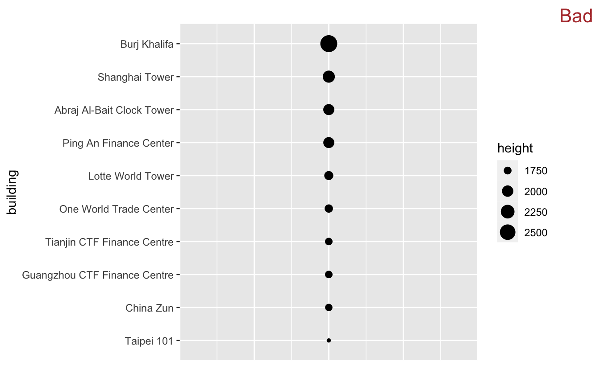
To quantify these observations, Cleveland and McGill (Cleveland and McGill (1985)) designed an experiment to test how accurately humans can decode different encodings of continuous data. The results of their experiment led the following ranking (from best to worst) of encodings:
- Position along a common scale (i.e., placing elements along a common axis)
- Position along identical but nonaligned scales (i.e., placing elements along a common axis, but on different facets)
- Length
- Angle
- Slope
- Area
- Volume
- Density
- Color saturation (i.e., the intensity/purity of a color)
- Color hue (blue, green, red, etc.) (Cleveland and McGill 1985)
This ranking is only for continuous variables (again, we’re using continuous in the ggplot2 sense, not the mathematical one). Color hue may not be a very good way to encode a continuous variable, but it can be very useful for discrete ones.
You will often want to plot multiple continuous variables, and so will need to use multiple encodings. Loosely rank the variables you wish to visualize from most important to least important. Encode the most important variables with encodings from the top of the list, moving to less accurate encodings only when necessary.
For example, above you saw how size is not a good choice for encoding height. However, if we want to visualize building, height, and floors on the same plot, we’ll need to use three encodings.
building is a discrete variable, and so Cleveland and McGill’s ranking does not apply. Let’s say we’re committed to putting building on an axis. Now, there’s only one open axis, so we can only encode either height or floors with position. height is probably more important, so let’s encode height with position. This gives us the plot from earlier.
buildings_10 %>%
mutate(building = fct_reorder(building, height)) %>%
ggplot(mapping = aes(x = height, y = building)) +
geom_point()We still need to encode floors. The next element in the ranking is “Position along identical but nonaligned scales.” This would require faceting. It doesn’t really make sense to facet by any of the variables, so we move to the next element which is length. Length also won’t work (extending the dots into lines corresponding to the number of floors would seem to imply that floors are in the same units as height). Angle isn’t a good option either. We then arrive at area, which could work.
We’ll use the size argument of geom_point(), which by default scales the areas of the circles according to the data.
buildings_10 %>%
mutate(building = fct_reorder(building, height)) %>%
ggplot(mapping = aes(x = height, y = building, size = floors)) +
geom_point()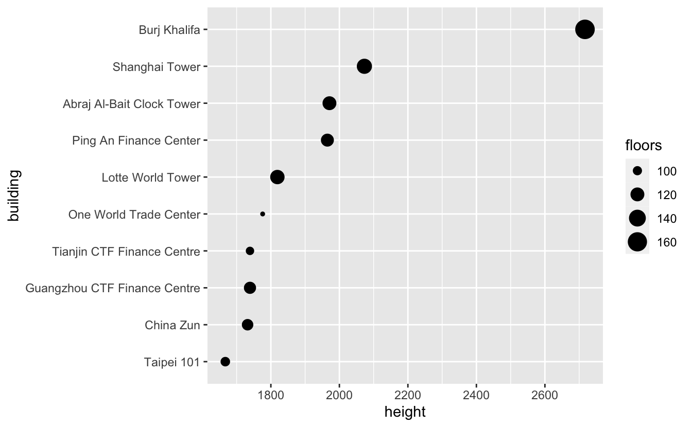
This plot is OK. You may not be able to tell exactly how many floors each building has, but you can immediately see that One World Trade Center is an outlier.
If this were an EDA plot, you might further investigate this discovery about One World Trade Center by directly plotting the height to floors ratio.
buildings_10 %>%
mutate(building = fct_reorder(building, height / floors)) %>%
ggplot(mapping = aes(x = height / floors, y = building)) +
geom_point()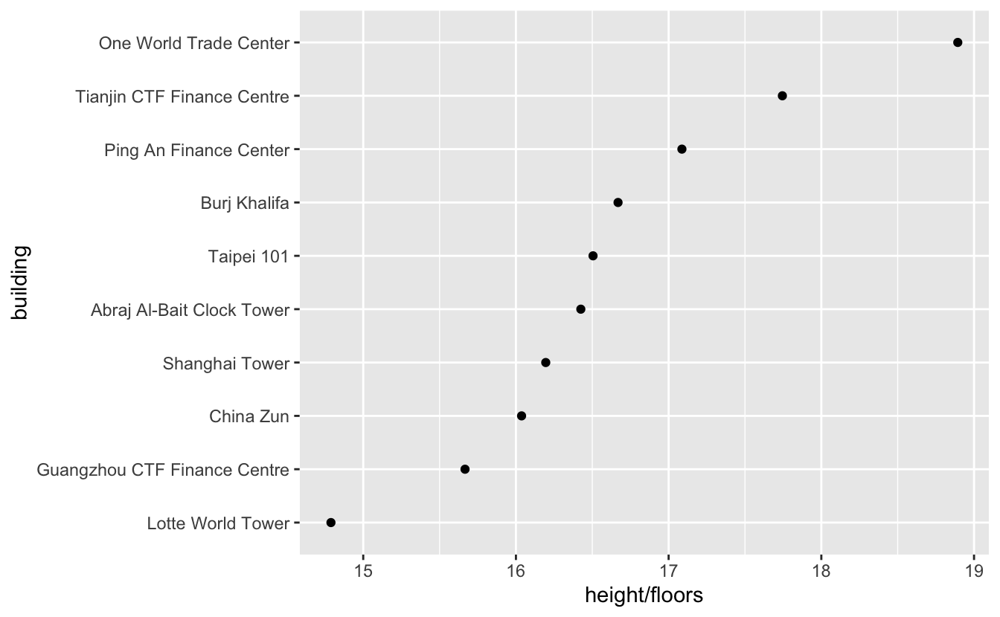
If the goal is to show the height to floors ratio, this plot is much better. By encoding the ratio with position only, instead of position and size, it’s now clear that both One World Trade Center and Lotte World Tower are unusual. Lotte World Tower has very short floors and One World Trade Center has very tall floors.
Creating new variables can often lead to better insights than plotting several variables at once. If your plot uses several continuous variables, ask yourself if there’s a more direct way to measure the relationship that you’re curious about.
3.3 Strategies
A basic understanding of human perception is important to visualization, but is only one tool in your data visualization toolbox. Effective visualization also takes clear thinking, creativity, and continual improvement.
Here are four practical strategies to keep in mind when creating visualizations. In Discrete-continuous relationships and later chapters, we talk about strategies for specific types of plots. The following strategies apply to all visualizations.
3.3.1 Set goals
Setting goals for visualizations forces you to think clearly about a visualization’s purpose. For EDA plots, your goals will typically be questions (e.g., “What’s the tallest building?”). For presentation plots, your goals revolve around conveying specific information to your audience.
Setting clear goals allows you to evaluate the effectiveness of your visualizations. Recall how, in the Discrete-continuous relationships chapter, we started off with two goals for our Utah languages visualization and then used those goals to evaluate various plots.
Goals can also help you focus. Data sets often have too many interesting features to explore or present in a single visualization. Setting intentional goals can helpfully narrow the scope of your plots.
3.3.2 Go for quantity
Once you have some goals in mind, create a bunch of plots that try to meet those goals. Luckily, ggplot2 and RStudio make it easy to quickly make many different kinds of plots.
In EDA, creating multiple plots allows you to more fully explore a question. Each plot is a slightly different window into the data. You can use the combination of all these plots to reach a more comprehensive understanding of the data.
(Note that quantity of questions is also important during EDA, but for now we’re only talking about answering one question at a time.)
If you’re creating a presentation plot, thinking of many different plots can free you from the common trap of committing too early to a single idea. It also allows you to compare the strengths and weaknesses of various approaches.
If you’re new to visualization, it can be difficult to come up with multiple ideas for a single goal. Your stockpile of visualization ideas is likely still small. One way to grow this stockpile, besides creating visualizations, is to consume a lot of visualizations. Scanning the geoms section of the ggplot2 cheat sheet can also help spark new ideas.
3.3.3 Look at your plots
Look at your plots and try to notice your reactions to them. Ask yourself, “What’s easy to see? What patterns jump out? What information is obscured?”
Learning how to notice which features are obvious and what are not takes practice, and knowing how to fix problems you find can be difficult. Try to notice weaknesses of your plots even if you’re unsure how to fix those weaknesses.
Sometimes, your visual system will immediately let you know when decoding is failing (e.g., with the overlapping labels). In other cases, the decoding process may succeed for you, but fail for others new to the data. For example, the following is an attempt to show that China has a lot of tall buildings. If you’ve been staring at this plot all day, it might become obvious to you that China has the most buildings in the data.
buildings %>%
ggplot(mapping = aes(x = height, y = country)) +
geom_point() +
stamp("Bad")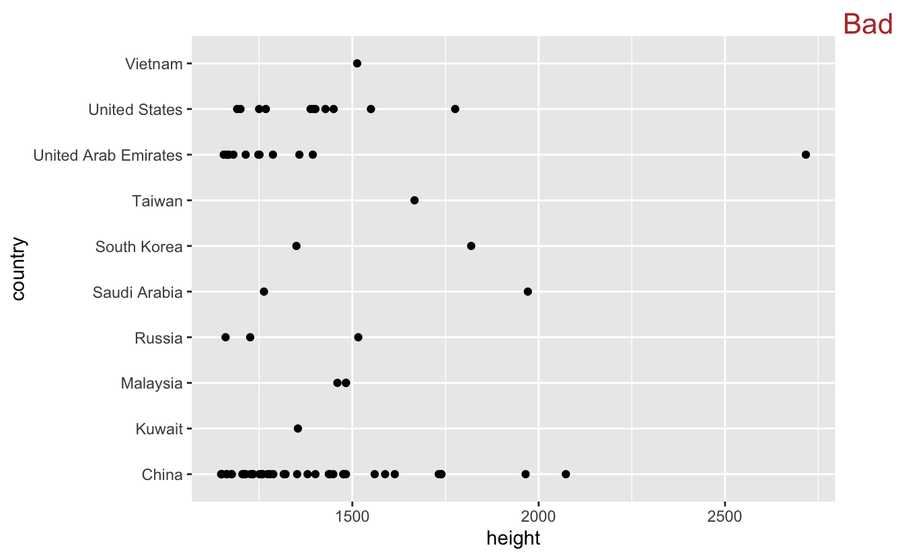
However, this discovery isn’t obvious to first time viewers.
Try to imagine seeing your plots for the first time. Think about what you would notice if you didn’t already know what you should be looking for, and ask yourself if that’s really what you want viewers to notice.
For the above example, if the goal is to highlight the number of buildings in each country, it would be much better to eliminate height and just plot the number of buildings.
buildings %>%
mutate(country = fct_infreq(country) %>% fct_rev()) %>%
ggplot(mapping = aes(y = country)) +
geom_bar()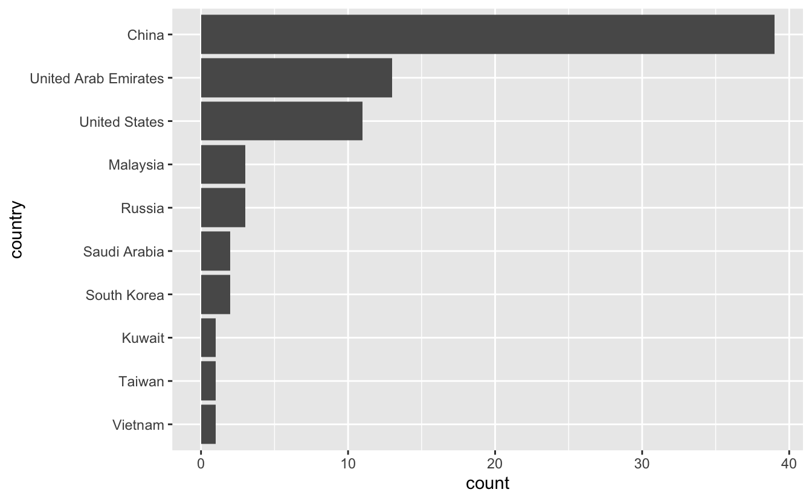
It’s now much more obvious that China has more tall buildings than any other country in the data. You can also tell that the United Arab Emirates has quite a few more tall buildings than the U.S.
3.3.4 Iterate
Your first attempt at a visualization will almost never be your best attempt. You shouldn’t expect to know, before plotting, the best way to visualize a given data set, and so iteration is critical. Once you have your goals in mind and have carefully looked at your visualizations, you can begin to iterate, fixing problems and emphasizing the relationships you wish to show.
Keep in mind that iteration can take time. You may not be able to come up with a better alternative to a plot immediately. It’s often helpful to take a break from a difficult visualization problem, allow your mind time to work on the problem in the background, and return later on.